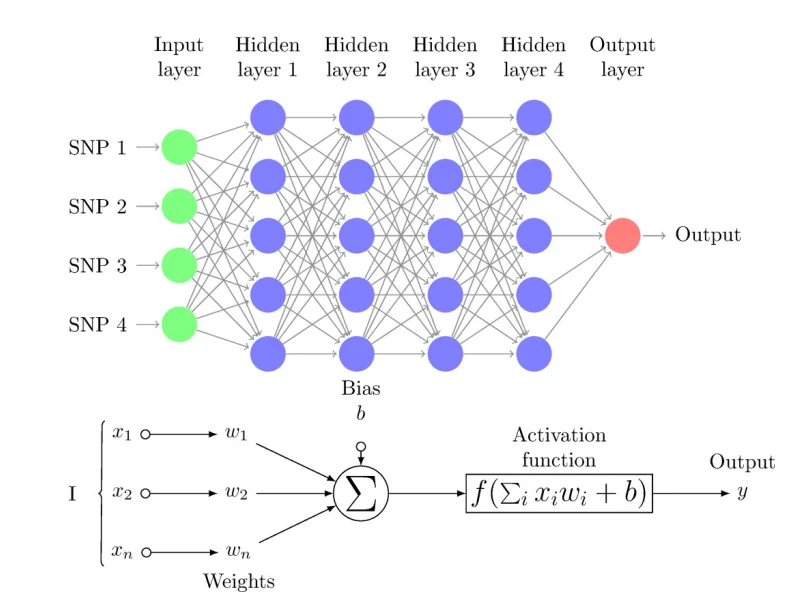
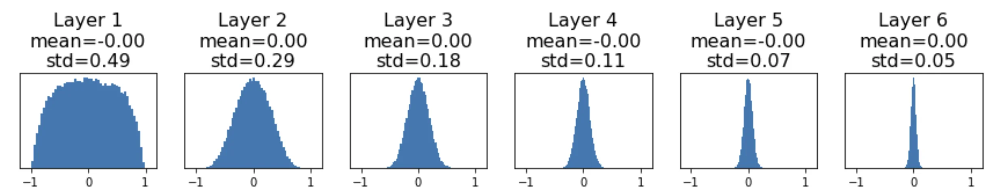
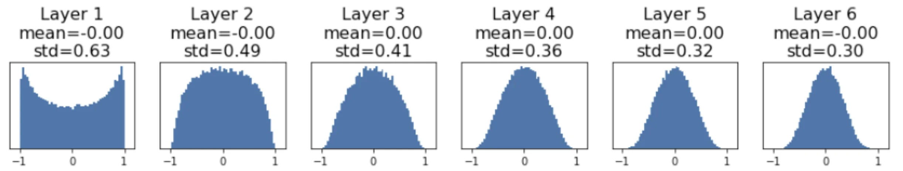
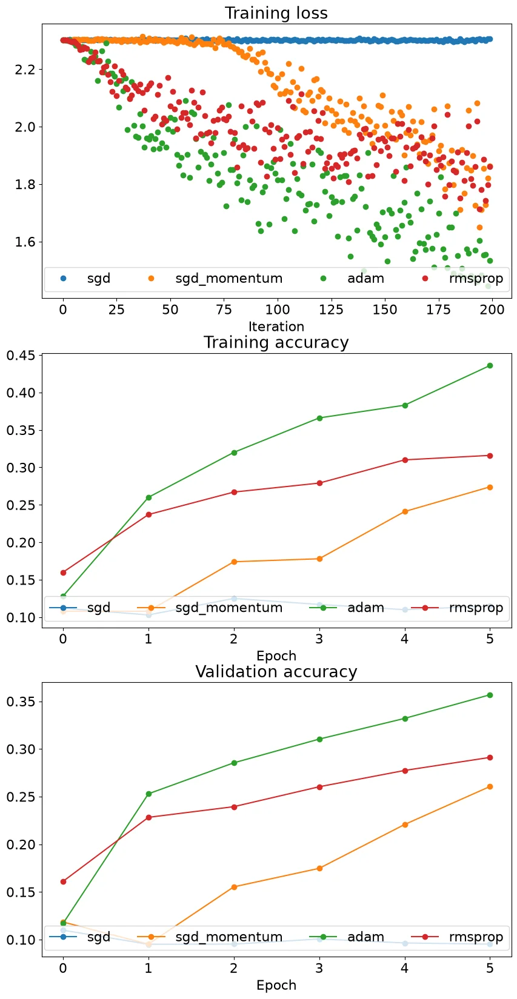
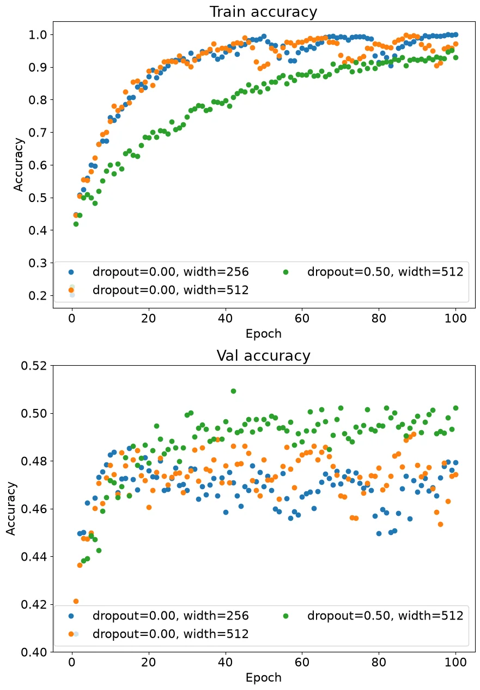

Assignment 3：Fully-Connected Neural Network & Convolutional Neural Network
A3 include 2 questions:
Q1: Fully-Connected Neural Network. Walk you through implementing Fully-Connected Neural Networks.
Q2: Convolutional Neural Network. Walk you through implementing Convolutional Neural Networks.
Fully-Connected Neural Network
对双层神经网络进行拓展，采用多个非线性层，最后一层为线性层。

本次实验中，非线性层的激活函数使用ReLU。大体结构为input-(Linear-ReLU)-(Linear-ReLU)···-Linear-output。
Modularization
由于多层神经网络的层数、每层维度、权重等参数都是自定义的，如果像双层神经网络那样逐层进行前向/反向传播，会非常繁琐。为了简化神经网络的训练，我们利用模块化(modularization)来对相同结构进行封装，在模块内部实现相应的前向/反向传播，在需要的时候调用对应的模块。
Linear
实现线性层的封装。
forward pass
对传入的x（形状为（N,d1,d2,...,dk））进行结构调整，并实现线性层的前向计算。cache用来记录输入的原始数据，后续反向传播时需要使用。
| def forward(x, w, b):
out = None
x_flat=x.reshape(x.shape[0],-1)
out=torch.mm(x_flat,w)+b
cache = (x, w, b)
return out, cache
|
backward pass
复用cache中的数据，实现线性层的反向传播过程，其中dx与初始的x形状相同。
| def backward(dout, cache):
x, w, b = cache
dx, dw, db = None, None, None
x_flat=x.reshape(x.shape[0],-1)
dx=torch.mm(dout,w.t()).reshape(x.shape)
dw=torch.mm(x_flat.t(),dout)
db=dout.sum(dim=0)
return dx, dw, db
|
ReLU
实现ReLU的封装。
forward pass
实现ReLU的前向传播。
| v0 |
|---|
| def forward(x):
out = None
mask=(x<0)
out=x
out[mask]=0
cache = x
return out, cache
|
这样写犯了一个语法错误。在python中，把一个变量赋值给新的变量只是将新变量指向原变量，并没有创建一个与原变量值相同的新变量，因此高亮行对out进行修改时，同时修改了x，导致cache中数据错误。
将out表示为关于x的运算表达式，解释器就会自动创建新变量。
backward pass
实现ReLU的反向传播，将小于 0 的项的梯度截断为 0。
| def backward(dout, cache):
dx, x = None, cache
mask=(x<=0)
grad_x=torch.ones(x.shape,device=x.device,dtype=x.dtype)
grad_x[mask]=0
dx=grad_x*dout
return dx
|
Linear_ReLU
由于Linear+ReLU的组合在多层神经网络中反复出现，我们可以把这两个模块也封装起来。
| class Linear_ReLU(object):
@staticmethod
def forward(x, w, b):
a, fc_cache = Linear.forward(x, w, b)
out, relu_cache = ReLU.forward(a)
cache = (fc_cache, relu_cache)
return out, cache
@staticmethod
def backward(dout, cache):
fc_cache, relu_cache = cache
da = ReLU.backward(dout, relu_cache)
dx, dw, db = Linear.backward(da, fc_cache)
return dx, dw, db
|
Loss Function
对损失函数SVM和Softmax也可以按一样的道理进行封装。
Utilization
有了封装，我们就可以连接、组合这些模块来实现多层神经网络。默认使用SGD进行优化。
TwoLayerNet
我们首先通过模块化实现此前已实现过的双层神经网络。
initialization
权重初始化
对于初始的权重矩阵，我们有一定的要求。如果仅使用按高斯分布生成的随机权重值，原始数据经过多层神经网络的传播，其标准差会被放大/缩小。

上图展示了一个激活函数为tanh的六层神经网络，可以看到数据逐步趋于全0。
那么该如何解决这个问题呢？通过一些数学推导（见下），研究者发现如果初始权重矩阵的标准差取某个特定的值，就可以保证该网络层的输出和输入数据的标准差相同，使各层数据分布变稳定。
例如，初始权重矩阵的标准差取 \(1/\sqrt{D_{in}}\) 时（\(D_{in}\)是输入矩阵x的维度），数据分布就变得很好：

需要注意的是，对于不同的激活函数，初始权重需要满足的标准差也不同。\(1/\sqrt{D_{in}}\) 这个结论是基于单个线性层推导出来的。例如，如果激活函数为ReLU，初始权重的标准差需要取 \(2/\sqrt{D_{in}}\) 。
初始标准差推导
假设初始权重矩阵的均值为 0，输入矩阵的维度为 \(D_{in}\)，我们对线性层进行分析：
\[\begin{aligned}
\mathbf{y} &= W\mathbf{x} \\[8pt]
y_i &= \sum_{j=1}^{D_{\mathrm{in}}} x_j w_j \\[12pt]
\operatorname{Var}(y_i)
&= D_{\mathrm{in}} \cdot \operatorname{Var}(x_i w_i)
\\[6pt]
&= D_{\mathrm{in}} \cdot
\left(
\mathbb{E}[x_i^2]\mathbb{E}[w_i^2]
-\mathbb{E}[x_i]^2\mathbb{E}[w_i]^2
\right)
\\[6pt]
&= D_{\mathrm{in}} \cdot
\operatorname{Var}(x_i)\operatorname{Var}(w_i)
\\[12pt]
\text{If } \operatorname{Var}(w_i)
&= \frac{1}{D_{\mathrm{in}}},
\quad \text{then } \operatorname{Var}(y_i)
= \operatorname{Var}(x_i)
\end{aligned}\]
本次实验中，初始标准差weight_scale是给定的，我们只需要在标准正态分布基础上乘weight_scale就能得到均值为 0 、标准差为weight_scale的正态分布。偏置初始值直接置 0 。
| w1=torch.randn(input_dim,hidden_dim,dtype=dtype,device=device)*(weight_scale)
b1=torch.zeros(hidden_dim,device=device,dtype=dtype)
w2=torch.randn(hidden_dim,num_classes,dtype=dtype,device=device)*(weight_scale)
b2=torch.zeros(num_classes,device=device,dtype=dtype)
self.params['W1']=w1
self.params['b1']=b1
self.params['W2']=w2
self.params['b2']=b2
|
forward pass
实例化一个Linear_ReLU模块和一个Linear模块，调用封装好的前向函数，并将原始数据存入cache。
不要忘了正则化项！
| score |
|---|
| layer1=Linear_ReLU()
layer2=Linear()
out1,cache1=layer1.forward(X,self.params['W1'],self.params['b1'])
out2,cache2=layer2.forward(out1,self.params['W2'],self.params['b2'])
scores=out2
|
- 调用
Softmax模块，计算loss并记录softmax的梯度。
| softmax loss |
|---|
| loss,grad_softmax=softmax_loss(scores,y)
loss+=self.reg*((self.params['W1']**2).sum()+(self.params['W2']**2).sum())
|
backward pass
调用几个模块的反向函数，计算各参数的梯度，并把梯度存入grad字典里。
| gradient |
|---|
| dout1,dw2,db2=layer2.backward(grad_softmax,cache2)
dw2+=2*self.reg*self.params['W2']
dx,dw1,db1=layer1.backward(dout1,cache1)
dw1+=2*self.reg*self.params['W1']
grads['W1']=dw1
grads['b1']=db1
grads['W2']=dw2
grads['b2']=db2
|
FullyConnectedNet
与双层神经网络不同的是，在实际实现中我们需要维护几个数据列表来存储/调用不同网络层的模块/cache/输入输出，除此之外都是一样的。
initialization
| last_dim=input_dim
for i in range(self.num_layers-1):
w=torch.randn(last_dim,hidden_dims[i],device=device,dtype=dtype)*weight_scale
last_dim=hidden_dims[i]
b=torch.zeros(hidden_dims[i],device=device,dtype=dtype)
self.params[f'W{i+1}']=w
self.params[f'b{i+1}']=b
self.params[f'W{self.num_layers}']=torch.randn(last_dim,num_classes,device=device,dtype=dtype)
self.params[f'W{self.num_layers}']=torch.randn(last_dim,num_classes,device=device,dtype=dtype)*weight_scale
|
forward pass
| score |
|---|
| layers=[]
caches=[]
outs=[]
outs.append(X)
for i in range(self.num_layers-1):
layer=Linear_ReLU()
layers.append(layer)
out,cache=layer.forward(outs[i],self.params[f'W{i+1}'],self.params[f'b{i+1}'])
outs.append(out)
caches.append(cache)
layer=Linear()
layers.append(layer)
scores,cache=layer.forward(outs[self.num_layers-1],self.params[f'W{self.num_layers}'],self.params[f'b{self.num_layers}'])
outs.append(scores)
caches.append(cache)
|
题目要求在多层神经网络中，正则化系数要多乘一个0.5，损失函数和梯度的计算都要相应调整。
| loss |
|---|
| loss,grad_softmax=softmax_loss(scores,y)
for i in range(self.num_layers):
loss+=0.5*self.reg*((self.params[f'W{i+1}']**2).sum())
|
backward pass
| gradient |
|---|
| dout,dw,db=layers[self.num_layers-1].backward(grad_softmax,caches[self.num_layers-1])
dw+=self.reg*self.params[f'W{self.num_layers}']
grads[f'W{self.num_layers}']=dw
grads[f'b{self.num_layers}']=db
for i in range(self.num_layers-1):
index=self.num_layers-2-i
dout,dw,db=layers[index].backward(dout,caches[index])
dw+=self.reg*self.params[f'W{index+1}']
grads[f'W{index+1}']=dw
grads[f'b{index+1}']=db
|
Optimization
在优化神经网络的过程中，除了最基本的SGD，还有多种梯度下降的方法，下面依次实现几种有代表性的更新规则。
SGD Momentum
考虑一个物理场景——物体从山坡上滑下，我们发现对参数张量做梯度下降可以类比到这个物理情景中。初始化随机参数等价于将物体放在山坡上某个位置，初速度为 0 ；而整个梯度下降的过程就等价于让物体沿山坡滑下。
对于山坡上的物体，其重力势能为 \(U = m g h\)，运动过程中，其受力大小为 \(F = - \nabla U\)，对应优化过程中的梯度矩阵。而根据牛顿第二定律 \(F = m a\)，物体速度的变化快慢与力的大小成比例。回忆速度变化公式 \(v = v_0 - a \Delta t\)，把单位时间与梯度优化的每一步对应起来，可以在梯度下降的公式中引入“速度”。
\[v = \mu v - \alpha \mathbf{d} x\]
\[x = x + v\]
其中 \(\mu\) 对应物理情景中摩擦力的影响。
实际代码如下：
| sgd_momentum |
|---|
| v=config['momentum']*v-config['learning_rate']*dw
next_w=w+v
|
RMSprop
使用一个cache存储过去的梯度信息，并引入衰减因子来控制cache的大小，更新x时根据cache的大小对这一步的梯度进行缩放。eps可以避免分母为 0 /趋于 0 。
cache = decay_rate * cache + (1 - decay_rate) * dx^2
x += - learning_rate * dx / (sqrt(cache) + eps)
实际代码如下：
| rmsprop |
|---|
| config['cache']=config['decay_rate']*config['cache']+(1-config['decay_rate'])*(dw**2)
next_w=w-config['learning_rate']*dw/(config['cache']**0.5+config['epsilon'])
|
Adam
综合SGD Momentum和RMSprop，使用两个变量m和v分别存储过去的梯度和梯度平方的信息，各自都有一个衰减因子。然后，根据步长t对m和v进行缩放。最后更新时，对“速度”m按v进行缩放。eps防止分母为 0 。
m = beta1*m + (1-beta1)*dx
v = beta2*v + (1-beta2)*(dx^2)
x += - learning_rate * m / (np.sqrt(v) + eps)
实际代码如下：
| adam |
|---|
| config['t']+=1
config['m']=config['beta1']*config['m']+(1-config['beta1'])*dw
mt=config['m']/(1-config['beta1']**config['t'])
config['v']=config['beta2']*config['v']+(1-config['beta2'])*(dw**2)
vt=config['v']/(1-config['beta2']**config['t'])
next_w=w-config['learning_rate']*mt/(vt**0.5+config['epsilon'])
|
Comparison
对比这几种更新规则，使用五层神经网络，在迭代次数相同的情况下，它们的loss下降速度和模型在训练集/验证集上的准确率都各有不同。综合来看，Adam算法在这里是最优的。

Regularization
除了此前一直使用的L2正则化，这里介绍一种新的正则化方式——Dropout。在训练过程中，对于每层神经网络，我们按一定概率略去输出矩阵的某些项，将其置为 0 ，然后再进入下一层神经网络。这样，我们就忽略了某些权重对损失和梯度的贡献，从而减少训练集的过拟合。
在训练过程中，经过dropout层，数据的期望会变为 \(p x + (1-p) \cdot 0 = p x\)（其中 p 是数据留存的概率）。然而，在测试过程中，数据并没有经过dropout，依然为 \(x\) 。因此，同样的输入，最终的测试结果就可能与训练结果不同！这就需要我们在测试过程中，让数据每经过一层网络都乘 \(p\) 。这会加大测试的开销，而我们一般都希望测试结果出来的越快越好，那么如何避免这一操作呢？
解决方法就是在训练过程中，每经过一层神经网络和dropout，都对留存的数据除以 \(p\) ，期望重新变回 \(x\) ，与测试中的数据期望相同。这就是inversed dropout。
Dropout
我们对Dropout层进行封装，实现它的前向和反向过程。
需要注意的是，在实验中， \(p\) 代表数据丢失的概率，相当于上面的 \(1-p\) ，相应的dropout操作也要进行调整。
forward pass
分成两个模式，训练模式下对数据按概率p进行丢弃，测试模式下不进行操作。具体实现是通过生成一个在 0-1 间服从均匀分布的随机矩阵，与p比大小，找到需要丢弃的位置。另外，记得把dropout的概率/模式及发生dropout的索引等原始信息存入cache。
| def forward(x, dropout_param):
p, mode = dropout_param['p'], dropout_param['mode']
if 'seed' in dropout_param:
torch.manual_seed(dropout_param['seed'])
mask = None
out = None
if mode == 'train':
mask=(torch.rand(x.shape,device=x.device,dtype=x.dtype)>p)/(1-p)
out=mask*x
elif mode == 'test':
out=x
cache = (dropout_param, mask)
return out, cache
|
backward pass
实现dropout的反向过程。
| def backward(dout, cache):
dropout_param, mask = cache
mode = dropout_param['mode']
dx = None
if mode == 'train':
dx=dout*mask
elif mode == 'test':
dx = dout
return dx
|
Final Network
把Dropout的判断及操作融入之前Fully-Connected Network的结构中，如果要进行Dropout，在训练过程中就要在每个非线性层后（ReLU后）加入一个Dropout层，调整原函数中的前向和反向过程。
除了加入Dropout，我还删除了原先存储各网络层模块实例化的列表，因为这个神经网络只有Linear_ReLU和Linear这两种网络层，只要分别实例化一个模块，就可以重复利用。
forward pass
| forward pass with dropout |
|---|
| layer=Linear_ReLU()
layer_last=Linear()
caches=[]
outs=[]
dropout_layer=Dropout()
dropout_caches=[]
outs.append(X)
for i in range(self.num_layers-1):
out,cache=layer.forward(outs[i],self.params[f'W{i+1}'],self.params[f'b{i+1}'])
if self.use_dropout:
out,dropout_cache=dropout_layer.forward(out,self.dropout_param)
dropout_caches.append(dropout_cache)
outs.append(out)
caches.append(cache)
scores,cache=layer_last.forward(outs[self.num_layers-1],self.params[f'W{self.num_layers}'],self.params[f'b{self.num_layers}'])
outs.append(scores)
caches.append(cache)
|
backward pass
| backward pass with dropout |
|---|
| loss,grad_softmax=softmax_loss(scores,y)
for i in range(self.num_layers):
loss+=0.5*self.reg*((self.params[f'W{i+1}']**2).sum())
dout,dw,db=layer_last.backward(grad_softmax,caches[self.num_layers-1])
dw+=self.reg*self.params[f'W{self.num_layers}']
grads[f'W{self.num_layers}']=dw
grads[f'b{self.num_layers}']=db
for i in range(self.num_layers-1):
index=self.num_layers-2-i
if self.use_dropout:
dout=dropout_layer.backward(dout,dropout_caches[index])
dout,dw,db=layer.backward(dout,caches[index])
dw+=self.reg*self.params[f'W{index+1}']
grads[f'W{index+1}']=dw
grads[f'b{index+1}']=db
|
Test
对一个二层神经网络进行测试，使用不同的隐藏层维度和dropout。

比较它们准确率的差异，我们观察到隐藏维为512时，有dropout的模型在验证集上的准确率高于没有dropout的模型，并且两者都比隐藏维为256的模型在验证集上的准确率高。这说明dropout确实发挥了作用，即便隐藏维很大，通过设置适当的dropout，我们也可以很好地避免训练集上的过拟合。